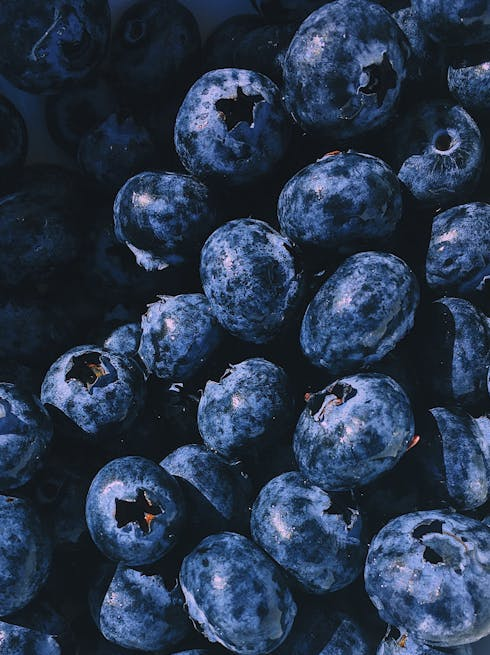
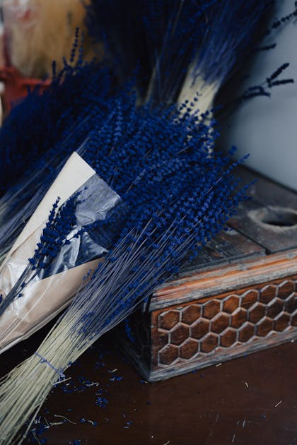
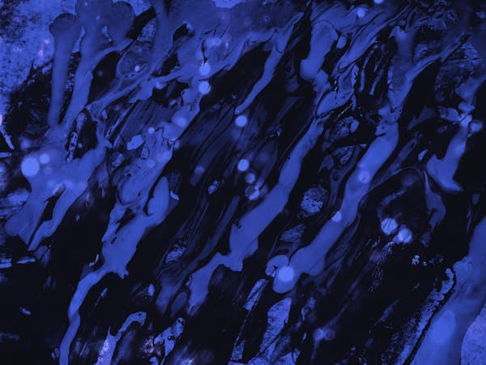
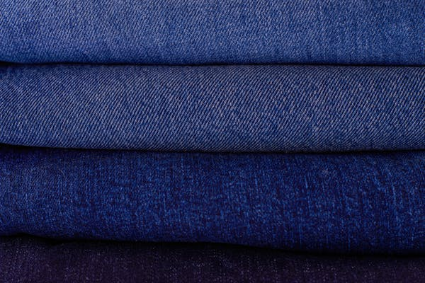
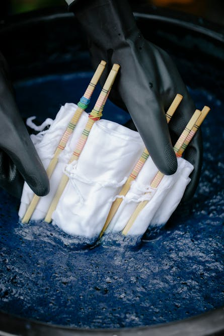

Página Azul?
Achei que estava fácil demais. Caso esteja perdido, existem 2 cores no arco-íris muito semelhantes: o Azul e o Anil.
Qual será essa página?
Se você esteve pulando as curiosidades (que eu passei tanto tempo pesquisando), agora vai precisar ler para identificar que cor é essa. Boa Sorte! (ou não)
Curiosidades - A...
- É uma cor frequentemente ligada a riquezas/nobrezas;
- A cor é famosa não só por sua beleza, mas também pelo seu uso histórico como corante e seu significado espiritual;
- Ao tingir tecidos, o pigmento, quando submerso, apresenta um tom verde-amarelado e, quando em contato com o oxigênio do ar, transforma-se na sua cor característica;





- Em algumas regiões, o corante em pó misturado com vinagre é aplicado nas bochechas para alívio da caxumba;
- O pigmento de altíssima qualidade já era extraído de caracóis marinhos milhares de anos atrás;
- Não é uma cor primária, é derivado de plantas que produzem seu pigmento em alta qualidade;
- A cor foi definida por Isaac Newton como uma das 7 cores do arco-íris, posicionado entre o ... e o violeta.
Conseguiu? Espero que sim
Pronto para seguir?